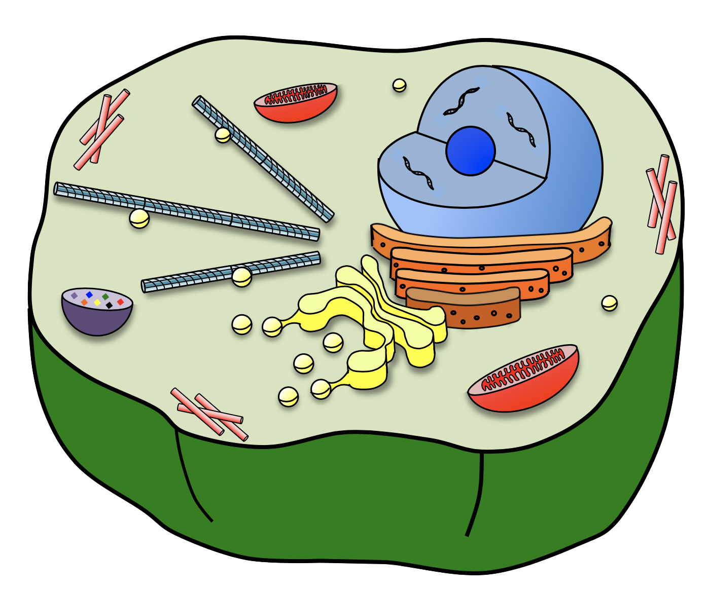

Learn CRISPR-cas9
So you want to learn CRISPR-cas9, huh? To understand how CRISPR/cas9 works, you need to understand the basics of cell biology and DNA first. Scroll down to learn these topics, and then read the CRISPR-cas9 section. You'll be an expert geneticist in no time!
What is a cell?
A cell is the most basic unit of life! All living things are made up
of cells - you, your dog, your favorite succulent, and even bacteria
in your gut! All animal cells have a basic cell layout, and share
basic components. One of the most important components of a cell,
is the cell's DNA - the instruction manual that tells the cell how
to make all of its components!
DNA is composed of bases (sort of like letters) and forms a large string.
A gene is a region of DNA that codes for a cellular component. Humans have
about 25,000 genes! These genes vary between people. Almost All of
the physical variation we see in humans, comes from differences at
the level of genes!
Now that you understand what a gene is,
let's move on to DNA editing.
DNA editing
Ever since Gregor Mendel discovered genes in 1866, biologists have
DREAMED of being able to manipulate genes. But in order to get there
biologists needed to better understand DNA. Biologists eventually
determined how gene editing could theoretically be performed. First, DNA
must be cut at the site to be edited. Next, template DNA that contains
DNA edits must be provided for the cell to repair the break. The reason
why this works, is that broken DNA is a life-or-death situation for a cell.
The cell has a repair mechanism in place to fix broken DNA - it searches
for DNA that resembles the DNA at the breaksite to use for repaire.
If successful, it "grabs" that DNA, and copies off of it to bridge the
DNA break. If the template is different from the original broken DNA strand,
an edit could be made in the original DNA strand! Despite understanding
how this could work - Biologists struggled to accomplish the first
step, cutting DNA at a specific place for a long time.
Now
that you know the basics of gene editing, move onto the CRISPR-cas9
section! You're almost an expert!!
Crispr-cas9
CRISPR-cas9 finally solved this problem and gave biologists a method
to cut DNA at a specific place! While studying a bacterial defense
system against invading viruses, Jennifer Doudna at UC Berkeley
discovered CRISPR-cas9. She discovered a simple immune system in bacteria
that prevents the infection of viruses. When viruses attack bacteria, viruses inject their
DNA into the bacterial cell. If the bacterial cell survives the attack, they
save a copy of a piece of the viral DNA, and add it into into their own DNA, in a
CRISPR (an abbreviation for Clustered Regularly Interspaced Short
Palindromic Repeats). If the bacterial cell comes in contact with
the same viral DNA again, the bacteria uses it's copy of the viral DNA to target
the new viral DNA for destruction! A bacterial protein, Cas9, binds to a
copy of the CRISPR DNA, finds the match in the invading viral DNA, and
cuts it at a very precise site. This prevents the viral attack. Biologists
quickly realized that they could use cas9 in the lab to target any piece
of DNA to be cut, as long as they could make a guide for cas9 to target DNA.
Easy right? You are officially a geneticist expert!